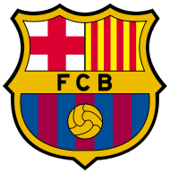

BARCELONA
News
About
O klubie
Hymn
Camp Nou
Seasons
2021/2022
2020/2021
2019/2020
2018/2019
2017/2018
2016/2017
2015/2016
2014/2015
Cules zone
Spotkania Cules
Okiem Kibica
Fan Klub Barca Polska
Wyjazd do Barcelony
Club shop
Lewandowski saves points in the endgame!
Xavi: We played uncertainly today
Marc-Andre ter Stegen breaks another record
De Jong: Lewandowski made the difference again
Franck Kessie chce odejść z Klubu!
Frank Kessie poinformował, że jest niezadowolony z dawanego mu wymiaru gry dla Barcelony. W związku z tym może przenieść się do Włoch.
Gdzie byłaby Barcelona bez Roberta Lewandowskiego?
Gole i asysty Polaka 'decydowały' o punktach tylko w dwóch meczach ligowych.
Media: Barcelona zainteresowana dwoma pomocnikami Chelsea
Klub szuka zmiennika i następcy Sergio Busquetsa